런던과 서울_지속적인 온라인 화상회의
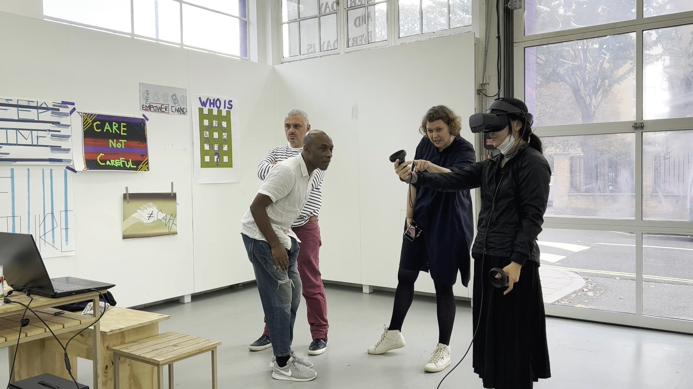 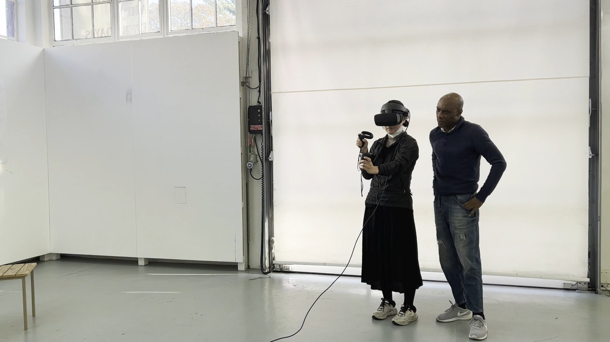
런던의 Showroom 에서 도운브레익스 멤버와 잠가자들이 정기적으로만나VR기기 시범과연습을함께함
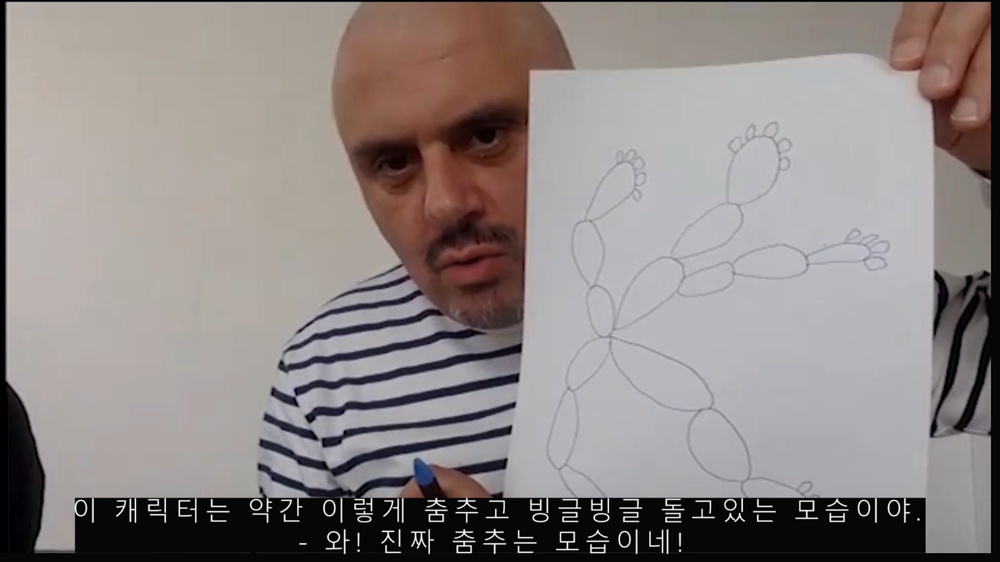
가족과 어린시절의 이야기가 담겨 있는 홀리데이의 이야기를 가지고 영화적 상상을 발전시킨다.
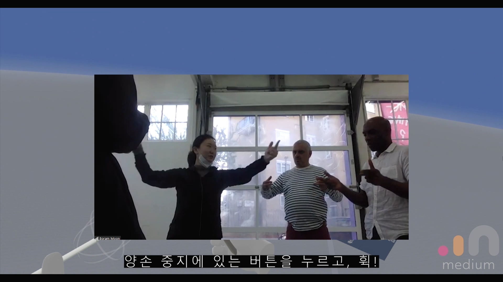 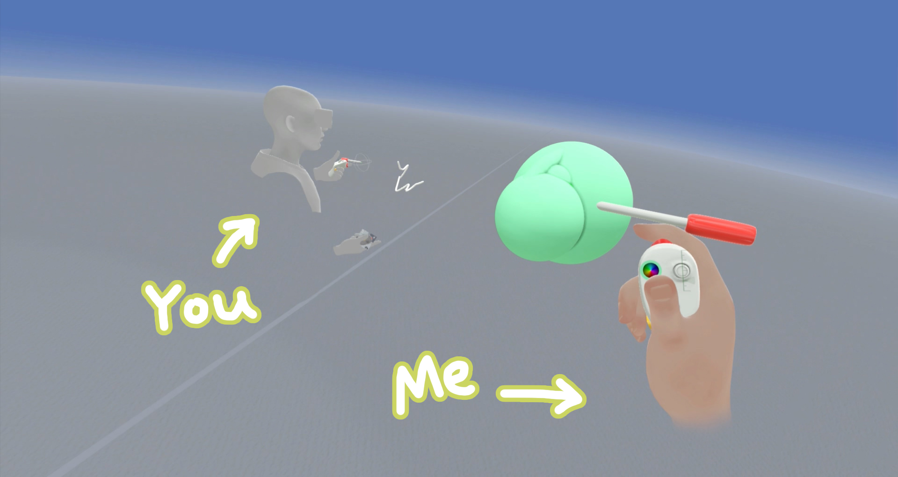
VR기기를 착용하고 참가자들과 가상공간에서 만나서 3D 캐릭터를 만들면서 스토리 텔링을 하는 과정
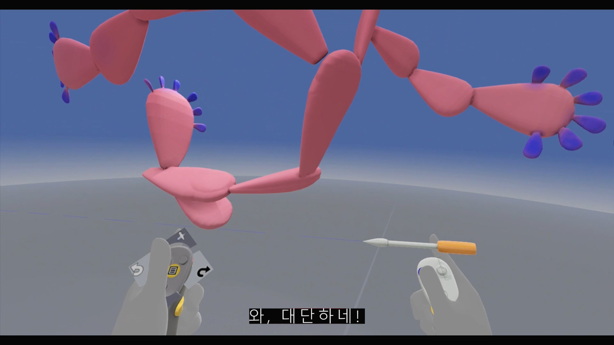
자신의 이야기 속 캐릭터를 아바타로 만드는 과정
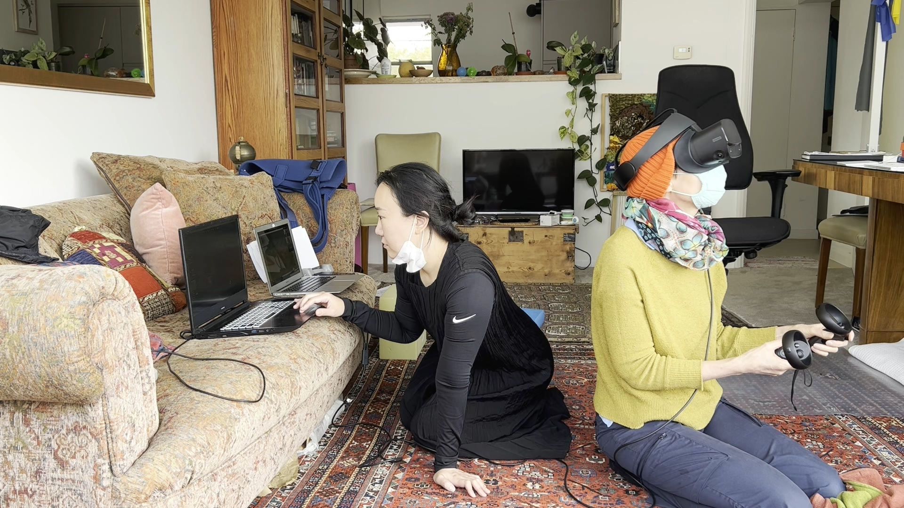 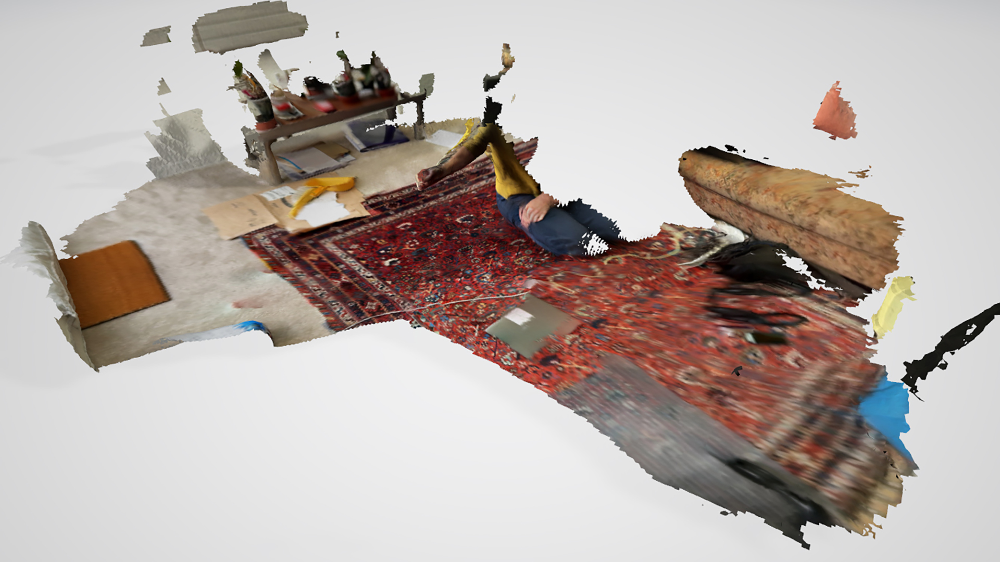 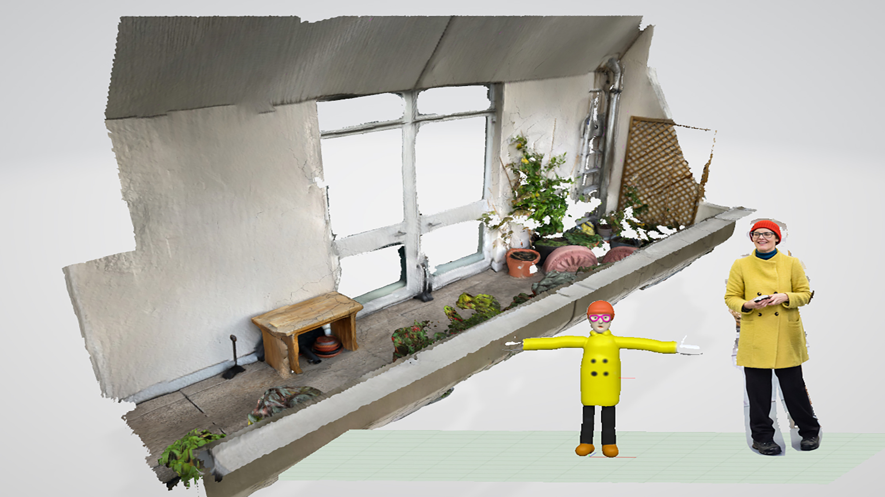
도운브레익스의 멤버, 문보람이 런던의 참가자, 캐롤라인의 집을 방문하여 그의 집과 발코니를 3D 스캔하여 데이터를 서울의 정지현에게 전송하여 가상세계 속 캐롤라인의 집을 구축한다.
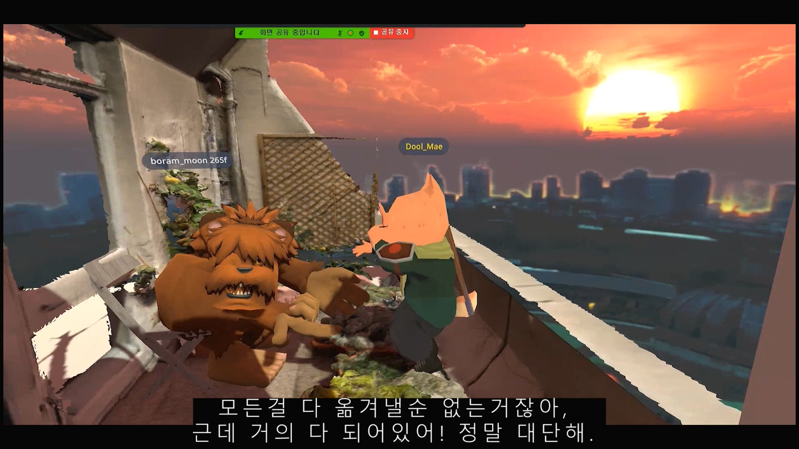 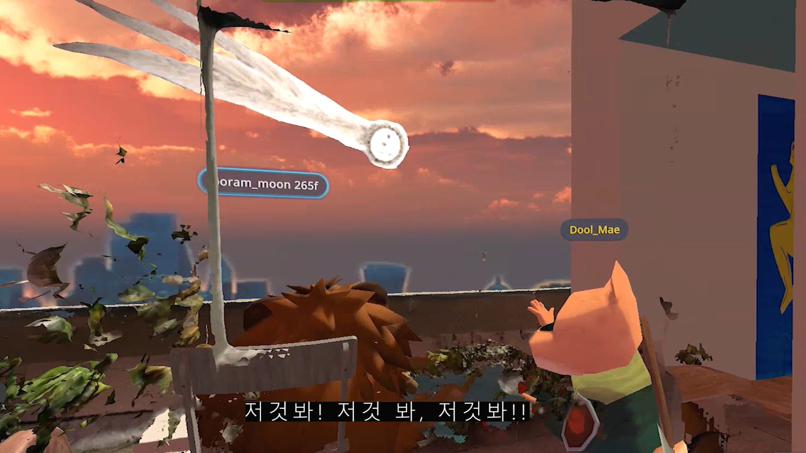 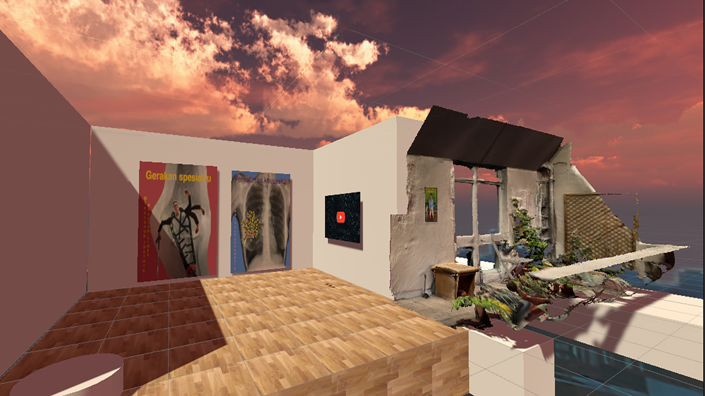
멤버들은 가상세계에서 구현된 캐롤라인의 집을 방문하여 캐롤라인의 이야기를 듣는다. 캐롤라인은 자신의 집과 닮은 가상의 집에서 영화를 만들기로 했다